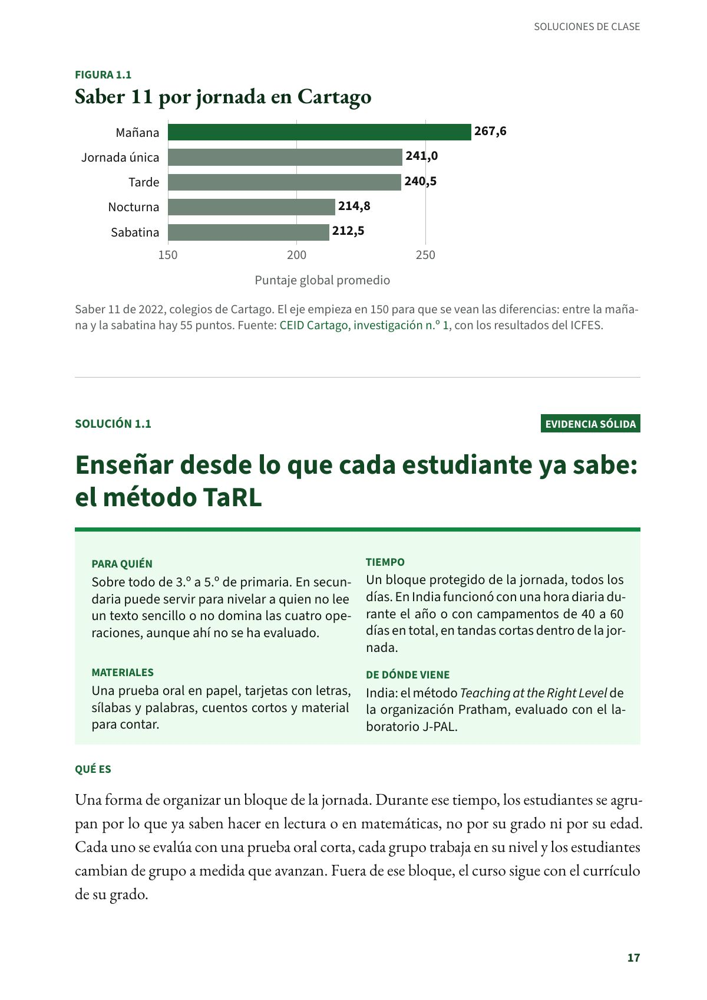
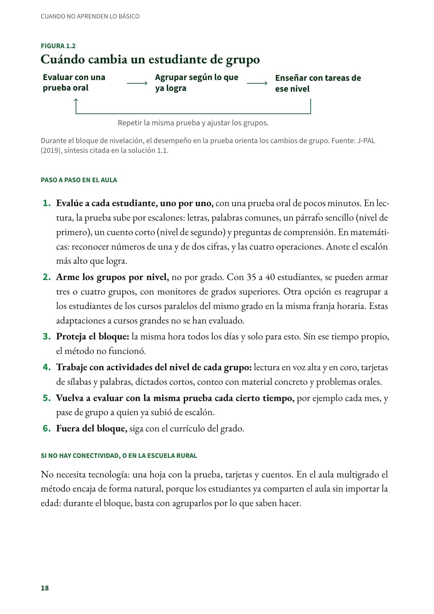
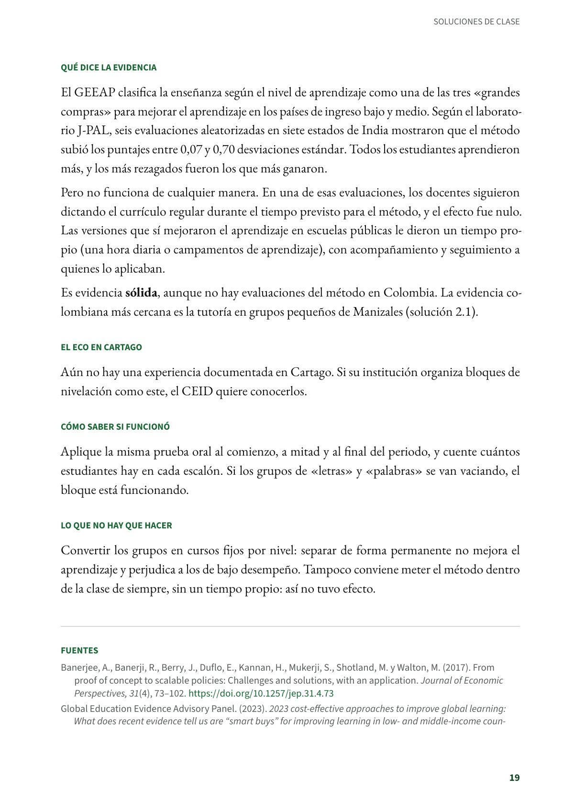
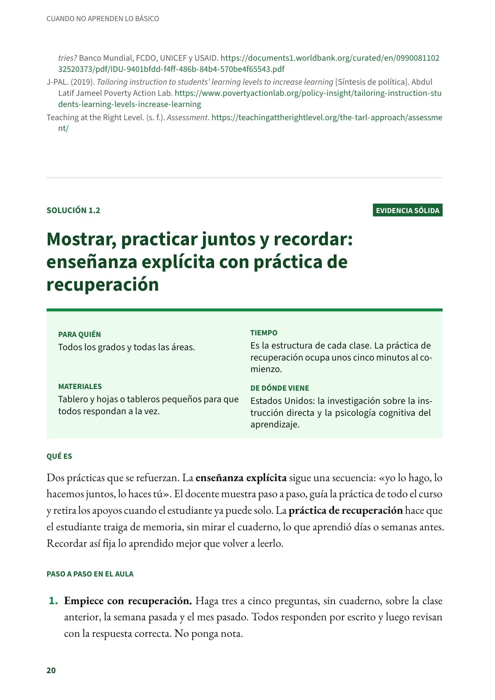

Enseñar desde lo que cada estudiante ya sabe: el método TaRL
Una forma de organizar un bloque de la jornada. Durante ese tiempo, los estudiantes se agrupan por lo que ya saben hacer en lectura o en matemáticas, no por su grado ni por su edad. Sobre todo de 3.º a 5.º de primaria. Evidencia sólida.
PDF · 4 págs. · 80 KBEn resumen
- Evidencia: sólida.
- Para quién: Sobre todo de 3.º a 5.º de primaria. En secundaria puede servir para nivelar a quien no lee un texto sencillo o no domina las cuatro operaciones, aunque ahí no se ha evaluado.
- Tiempo: Un bloque protegido de la jornada, todos los días. En India funcionó con una hora diaria durante el año o con campamentos de 40 a 60 días en total, en tandas cortas dentro de la jornada.
- Materiales: Una prueba oral en papel, tarjetas con letras, sílabas y palabras, cuentos cortos y material para contar.
- De dónde viene: India: el método Teaching at the Right Level de la organización Pratham, evaluado con el laboratorio J-PAL.
Qué es
Una forma de organizar un bloque de la jornada. Durante ese tiempo, los estudiantes se agrupan por lo que ya saben hacer en lectura o en matemáticas, no por su grado ni por su edad. Cada uno se evalúa con una prueba oral corta, cada grupo trabaja en su nivel y los estudiantes cambian de grupo a medida que avanzan. Fuera de ese bloque, el curso sigue con el currículo de su grado.
Paso a paso en el aula
- Evalúe a cada estudiante, uno por uno, con una prueba oral de pocos minutos. En lectura, la prueba sube por escalones: letras, palabras comunes, un párrafo sencillo (nivel de primero), un cuento corto (nivel de segundo) y preguntas de comprensión. En matemáticas: reconocer números de una y de dos cifras, y las cuatro operaciones. Anote el escalón más alto que logra.
- Arme los grupos por nivel, no por grado. Con 35 a 40 estudiantes, se pueden armar tres o cuatro grupos, con monitores de grados superiores. Otra opción es reagrupar a los estudiantes de los cursos paralelos del mismo grado en la misma franja horaria. Estas adaptaciones a cursos grandes no se han evaluado.
- Proteja el bloque: la misma hora todos los días y solo para esto. Sin ese tiempo propio, el método no funcionó.
- Trabaje con actividades del nivel de cada grupo: lectura en voz alta y en coro, tarjetas de sílabas y palabras, dictados cortos, conteo con material concreto y problemas orales.
- Vuelva a evaluar con la misma prueba cada cierto tiempo, por ejemplo cada mes, y pase de grupo a quien ya subió de escalón.
- Fuera del bloque, siga con el currículo del grado.
Si no hay conectividad, o en la escuela rural
No necesita tecnología: una hoja con la prueba, tarjetas y cuentos. En el aula multigrado el método encaja de forma natural, porque los estudiantes ya comparten el aula sin importar la edad: durante el bloque, basta con agruparlos por lo que saben hacer.
Qué dice la evidencia
El GEEAP clasifica la enseñanza según el nivel de aprendizaje como una de las tres «grandes compras» para mejorar el aprendizaje en los países de ingreso bajo y medio. Según el laboratorio J-PAL, seis evaluaciones aleatorizadas en siete estados de India mostraron que el método subió los puntajes entre 0,07 y 0,70 desviaciones estándar. Todos los estudiantes aprendieron más, y los más rezagados fueron los que más ganaron.
Pero no funciona de cualquier manera. En una de esas evaluaciones, los docentes siguieron dictando el currículo regular durante el tiempo previsto para el método, y el efecto fue nulo. Las versiones que sí mejoraron el aprendizaje en escuelas públicas le dieron un tiempo propio (una hora diaria o campamentos de aprendizaje), con acompañamiento y seguimiento a quienes lo aplicaban.
Es evidencia sólida, aunque no hay evaluaciones del método en Colombia. La evidencia colombiana más cercana es la tutoría en grupos pequeños de Manizales (solución 2.1).
El eco en Cartago
Aún no hay una experiencia documentada en Cartago. Si su institución organiza bloques de nivelación como este, el CEID quiere conocerlos.
Cómo saber si funcionó
Aplique la misma prueba oral al comienzo, a mitad y al final del periodo, y cuente cuántos estudiantes hay en cada escalón. Si los grupos de «letras» y «palabras» se van vaciando, el bloque está funcionando.
Lo que no hay que hacer
Convertir los grupos en cursos fijos por nivel: separar de forma permanente no mejora el aprendizaje y perjudica a los de bajo desempeño. Tampoco conviene meter el método dentro de la clase de siempre, sin un tiempo propio: así no tuvo efecto.
Fuentes
Banerjee, A., Banerji, R., Berry, J., Duflo, E., Kannan, H., Mukerji, S., Shotland, M. y Walton, M. (2017). From proof of concept to scalable policies: Challenges and solutions, with an application. Journal of Economic Perspectives, 31(4), 73–102. doi.org
Global Education Evidence Advisory Panel. (2023). 2023 cost-effective approaches to improve global learning: What does recent evidence tell us are “smart buys” for improving learning in low- and middle-income countries? Banco Mundial, FCDO, UNICEF y USAID. documents1.worldbank.org
J-PAL. (2019). Tailoring instruction to students’ learning levels to increase learning [Síntesis de política]. Abdul Latif Jameel Poverty Action Lab. povertyactionlab.org
Teaching at the Right Level. (s. f.). Assessment. teachingattherightlevel.org
Así se ve en el libro
4 páginas


